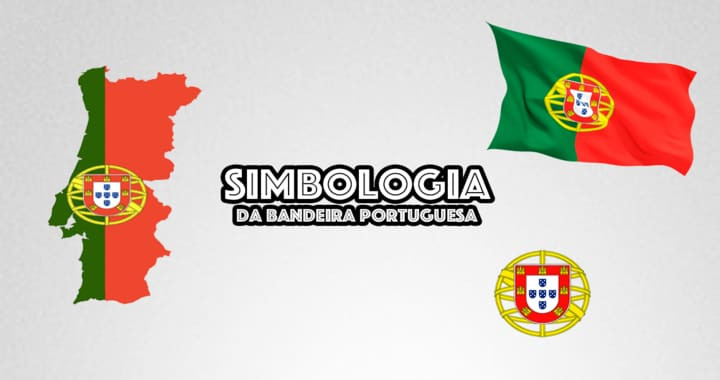

Simbologia da Bandeira Portuguesa
Simbolismo
A bandeira portuguesa exibe três símbolos importantes que compõem o brasão de armas: as cores dos campos, a esfera armilar e o escudo português.
Cores
A explicação para as cores verde e vermelho que compõem o campo de fundo surgiram durante o período do Estado Novo, o regime nacionalista autoritário que detinha o poder entre 1933 e 1974. Alega-se que o verde representa a esperança do povo português, enquanto o vermelho representa o sangue dos que morreram servindo a nação. Fontes acreditam que esses significados nobres não correspondem a verdade e são nada mais do que propaganda, para fornecer uma justificação honrosa para sua escolha de cores. Apesar do facto ]destas cores nunca cores terem constituído uma parte significativa da bandeira nacional até 1910, elas estiveram presentes em várias bandeiras históricas durante períodos importantes:
- D. João I incluiu uma cruz de Aviz verde no bordure vermelho de sua bandeira.
- A cruz vermelha da Ordem de Cristo foi usada sobre um campo branco como uma flâmula naval durante os Descobrimentos e, frequentemente, em velas de navios.
- Uma versão de fundo verde foi um padrão popular dos rebeldes durante a revolução de 1640 que restaurou a independência de Portugal para a Espanha. Apesar disso, não há fontes registadas para confirmar que esta foi a origem das cores republicanas.
- Outra explicação dá crédito total para a bandeira que foi hasteada na varanda do salão da cidade do Porto durante a rebelião de 1891.
- Consistia num campo vermelho com um disco verde e a inscrição Centro Democrático Federal «15 de Novembro» , representando um dos muitos clubes de maçonaria de inspiração republicana. Durante os 20 anos seguintes, o vermelho-e-verde esteve presente em cada item republicano em Portugal.
Esfera armilar
A esfera armilar foi um importante instrumento astronómico e de navegação para os marinheiros portugueses que se aventuraram em mares desconhecidos durante a Era dos Descobrimentos. Foi introduzido pelos Cavaleiros Templários, cujo conhecimento foi essencial para os descobrimentos portugueses. O Infante D. Henrique, grande responsável do desenvolvimento da Era dos Descobrimentos, foi realmente o Grão-mestre da Ordem de Cristo.
Desta forma, os descobrimentos portugueses foram o período mais importante da nação.
À luz disto, D. Manuel I, que governou durante este período, incorporou a esfera armilar na sua bandeira pessoal, a qual foi simultaneamente utilizada como estandarte de navios que dobravam a rota entre a metrópole e o Brasil, tornando-se assim um símbolo colonial e um elemento fulcral das bandeiras do futuro reino e império brasileiro.
Somado a isso, a esfera também é comum em todas as obras arquitetónicas de influência manuelina, onde é um dos principais elementos estilísticos, como visto no Mosteiro dos Jerónimos e na Torre de Belém.
Escudo português
Design atual do escudo português, que desde 1143 é exibido na bandeira nacional, com diferentes formatos e complexidade, o escudo português assenta sobre a esfera armilar. A única exceção foi durante o reinado de D. Afonso Henriques, mas ele está presente em cada bandeira histórica.
É o principal símbolo português, bem como um dos mais antigos, com os primeiros elementos do escudo atual a aparecerem durante o reinado de D. Sancho I. A evolução da bandeira portuguesa está inerentemente associada com a evolução do escudo.
Dentro de uma borda branca, cinco quinas (pequenos escudos azuis) com seus cinco besantes brancos representam as cinco chagas de Cristo quando crucificado, popularmente associadas com o "Milagre de Ourique".
A história associada com este milagre conta que antes da Batalha de Ourique (25 de Julho de 1139), um velho eremita apareceu diante de Conde Afonso Henriques (futuro Afonso I de Portugal) como um mensageiro divino. Este previu a vitória de Afonso Henriques e garantiu-lhe que Deus estava olhando por ele e seus pares, aconselhando-o também a afastar-se de seu acampamento, sozinho, caso ouvisse o sino da capela próxima a tocar na noite seguinte.
Ao fazer isso, testemunhou uma aparição de Jesus na cruz. Eufórico, ouviu Jesus prometendo vitórias para as batalhas que viessem, dizendo que Deus desejava agir através de Afonso e seus descendentes, a fim de criar um império que levaria seu nome para terras desconhecidas, escolhendo o português para realizar grandes tarefas.
Impulsionado por esta experiência espiritual, Afonso Henriques ganhou a batalha contra um inimigo poderoso. Diz a lenda que Afonso Henriques matou os cinco reis mouros das taifas de Sevilha, Badajoz, Elvas, Évora e Beja, antes de dizimar as tropas inimigas.
Assim, em gratidão a Jesus, incorporou cinco escudos (quinas) dispostos em forma de uma cruz, representando a vitória divina conduzida sobre os cinco reis inimigos cada um carregando com as cinco chagas de Cristo na forma de besantes de prata.
A soma de todos os besantes (sendo os besantes centrais contados duas vezes) daria trinta, simbolizando o valor em dinheiro que Judas teria recebido pela traição a Jesus Cristo.
No entanto, as evidências que indicam que o número de besantes em cada quina foi superior a cinco durante longos períodos a seguir ao reinado de Dom Afonso Henriques, bem como o facto de que somente no século XV esta lenda ser registada numa crônica de Fernão Lopes (1419), faz com que esta explicação surja como puro mito altamente carregado de sentimento patriótico, no sentido de que Portugal foi criado por uma intervenção divina e estava destinado a grandes feitos.
Os sete castelos são tradicionalmente considerados um símbolo das vitórias portuguesas sobre os seus inimigos mouros durante o reinado de D. Afonso III, que supostamente conquistou sete fortalezas inimigas durante a conquista do Algarve, concluída em 1249. No entanto, esta explicação é fraca, uma vez que este rei não tinha sete castelos na sua bandeira, mas sim um número não especificado. Algumas reconstruções exibem cerca de dezasseis castelos, sendo este número alterado para doze em 1385 e sendo apenas fixado em sete em 1485.
Uma hipótese sobre a origem dos castelos na borda vermelha encontra-se nos laços de família de D. Afonso III com Castela (sua mãe e segunda mulher eram castelhanas), cujos brasões consistiam num castelo dourado sobre um campo vermelho.
A Bandeira de Portugal deve ser sempre transportada numa bandeja ou numa almofada, própria para o efeito, sendo sempre dobrada de forma correta.
Fonte: Reprodução do Facebook.
Editado por: equipe do site TugaLife.